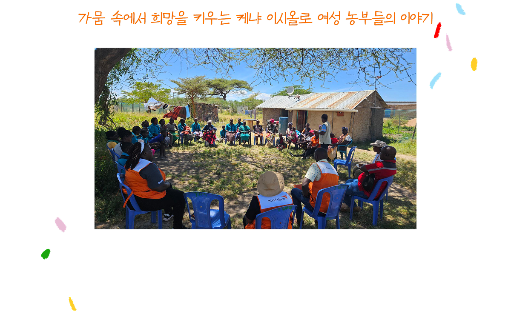
케냐 이시올로는 가뭄과 기후변화로 생계가 위협받는 지역으로, 주민 대부분이 농업에 의존해 살아갑니다.
하지만 반복되는 가뭄과 불안정한 수입으로 여성 농민들은 더욱 큰 어려움에 직면해 있습니다.
월드비전은 이 지역에서 여성들의 경제적 자립과 지역사회 회복력 강화를 목표로 다양한 지원을 하고 있습니다.
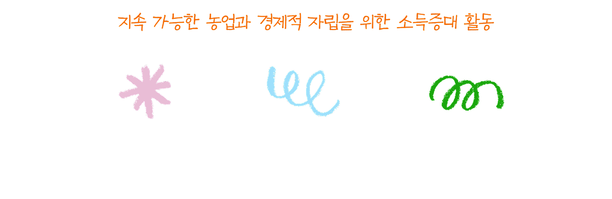
기후 스마트 농업 교육
가뭄에 강한 작물을 재배하고, 지속 가능한 자원관리법을 익히도록 지원하고 있습니다.
저축 및 대출 그룹 운영
여성들이 함께 저축하고 대출을 받을 수 있도록 금융 서비스 연계했습니다.
리더십 강화와 의사결정 참여 독려
여성들이 지역사회 리더로 성장해 더 나은 변화를 이끌도록 돕습니다.
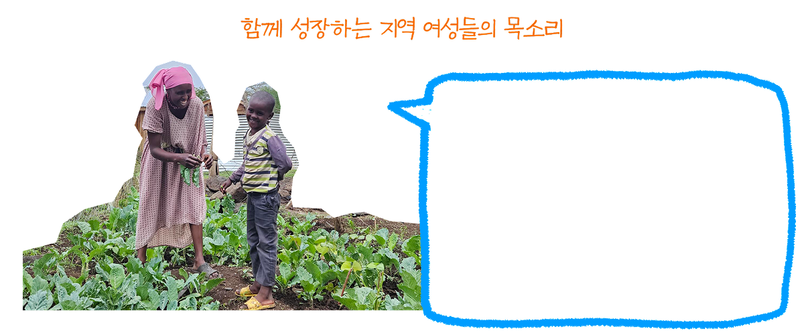
Namaryn (7남매의 엄마)
“기후 스마트 농법과 저축 그룹 덕분에 가뭄 중에도 200kg 이상의 작물을 수확할 수 있었어요.
그 수익으로 자녀들의 학비를 마련하고, 대출을 통해 집도 짓고 염소도 처음으로 구입했어요.”
이제 Namaryn 씨는 자신의 경험을 지역 여성들과 나누며 저축 그룹 가입과 작물 다양화를 독려하고 있습니다.
그녀는 가뭄의 위기를 함께 극복하는 여성들의 힘을 믿으며 지역사회의 변화를 이끌어가고 있습니다.
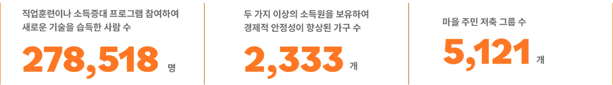
아동보호
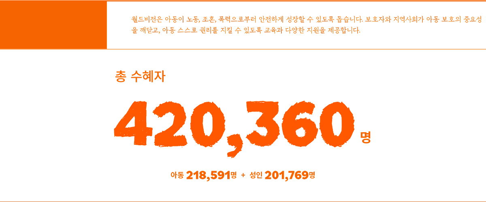
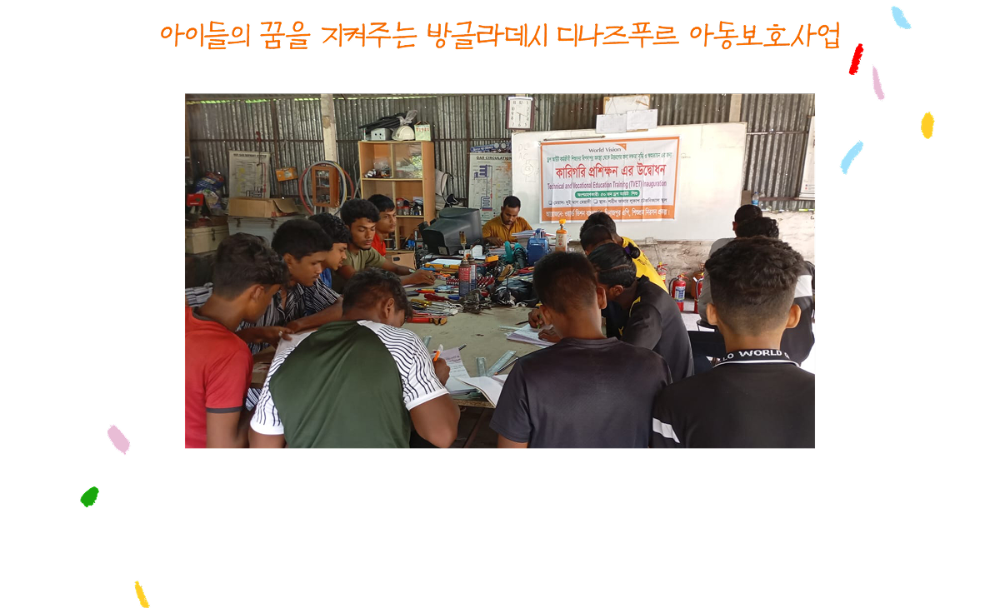
디나즈푸르 아이들은 가난과 보호자의 부재로 인해 어린 나이에 위험한 노동과 조혼, 범죄, 질병에 노출되기 쉽습니다.
월드비전은 아이들이 안전한 환경에서 꿈을 키우며 성장할 수 있도록 다양한 맞춤형 지원을 제공합니다.
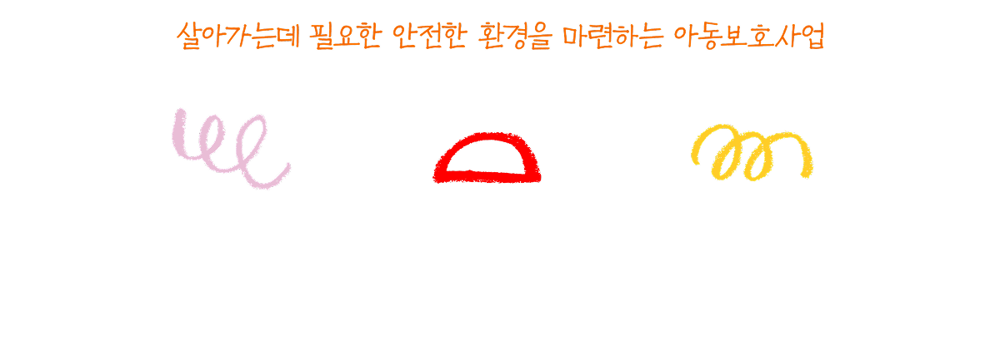
학교 복학 및 직업훈련 지원
학업을 중단했던 아이들이 다시 학교에 다닐 수 있도록 복학을 지원하고, 직업이 필요한 청소년에게 안전한 환경에서 직업훈련
제공합니다.
지역사회 교육 및 캠페인
부모, 사업주, 지역주민에게 아동보호의 중요성을 알리고 조혼과 아동 노동 근절 캠페인을 진행했습니다.
가정의 경제적 자립 지원
소득 향상을 위해 가정에 맞춤형 자원을 제공하고 경제적 자립을 돕는 교육을 실시했습니다.
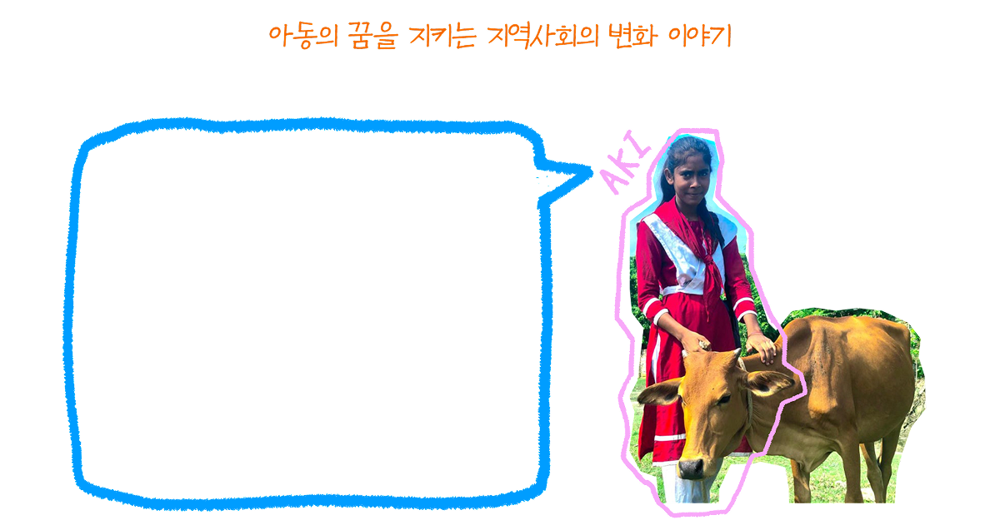
“다시 학교에 갈 수 있게 됐어요!” Aki (16세)
“월드비전 직원분이 저희 집을 찾아와 제 이야기를 들어주셨어요. 그때부터 모든 게 바뀌었죠.
우리 가족은 소를 지원받았고, 엄마는 우유 판매 교육을 받아 상까지 받으셨어요! 형편이 나아지면서 저도 다시 학교에 다닐 수 있었어요.
아동 권리와 조혼의 위험성에 대해서도 처음으로 알게 됐죠. 지금 제 꿈은 선생님이 되는 것이에요.
저처럼 학비 때문에 학교를 포기하는 아이들을 돕고 싶어요!” 월드비전의 아동보호 사업 덕분에 위험한 환경에서 일하던 아이들이
기술을 배우고, 가정은 안정적인 수입을 얻으며, 지역사회는 조혼과 아동 노동 근절에 동참하고 있습니다
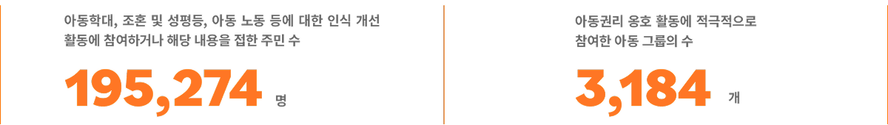
인도적지원사업
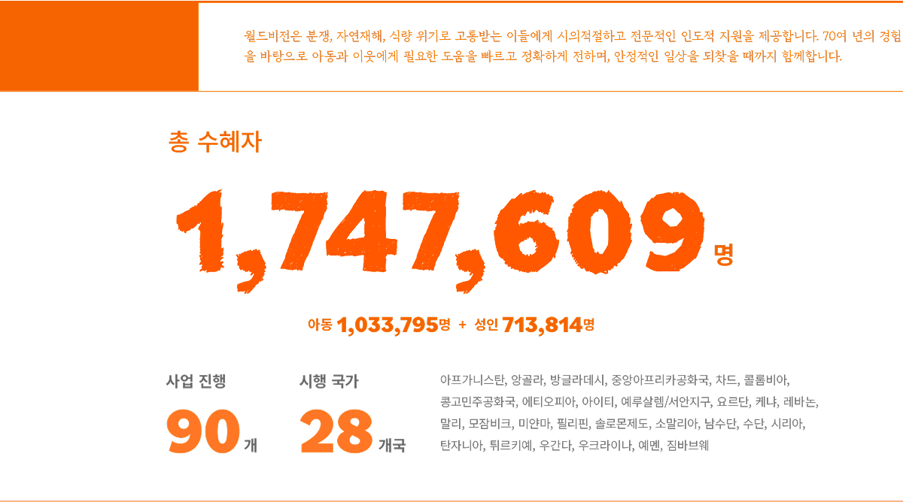
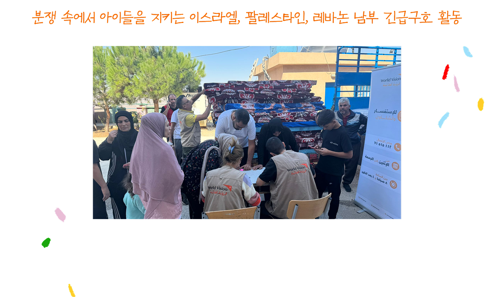
월드비전은 분쟁, 자연재해, 식량 위기로 고통받는 이들에게 시의적절하고 전문적인 인도적 지원을 제공합니다.
70여 년의 경험을 바탕으로 아동과 이웃에게 필요한 도움을 빠르고 정확하게 전하며, 안정적인 일상을 되찾을 때까지 함께합니다.
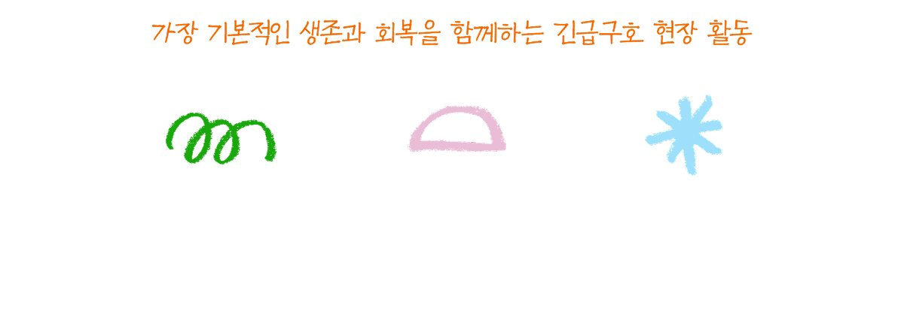
식량 및 식수 제공
현물 식량, 식수 지원, 급식소 운영을 통해 위기에 처한 가정의 생존을 위한 식량을 지원했습니다. 생필품 제공
매트리스, 방한용품, 소화기 등 분쟁 상황에서 존엄한 삶을 지원하는 물품 을 지원했습니다. 심리사회적 지원
아동 친화 공간 운영 등 아동과 주민들이 심리적 안정과 트라우마를 회복하여 일상으로의 복귀를 돕는 상담 및 치료를 지원했습니다.
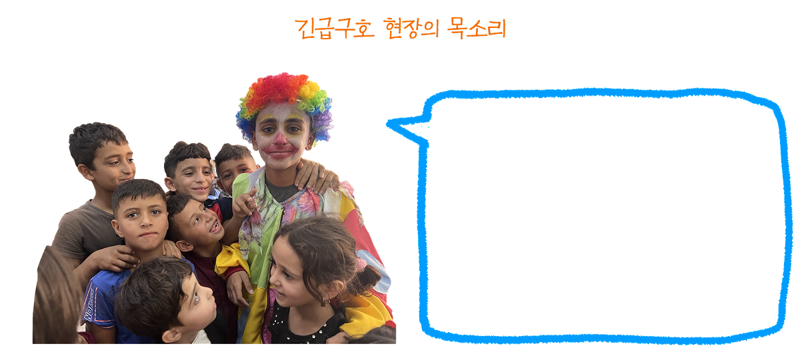
“아동 친화 공간이 저에게 큰 위로가 됐어요.”
서안지구에 사는 여아 (7세)
“폭력과 집에 두고 온 제 장난감과 동네 놀이터가 그리워요. 하지만, 월드비전의 아동 친화 공간에서 새로운 친구들을 만나고,
재밌는 놀이를 할 수 있어서 행복해요. 아동 친화 공간의 선생님은 제가 무엇을 하고 싶은지 물어봐요. 저는 친구들과 놀고,
노래하고, 얘기할 수 있으면 행복해요.”
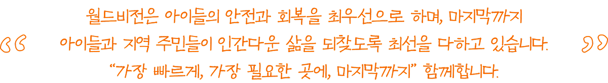
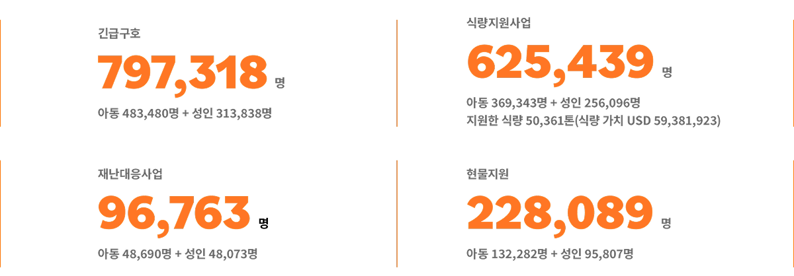
기후변화대응사업
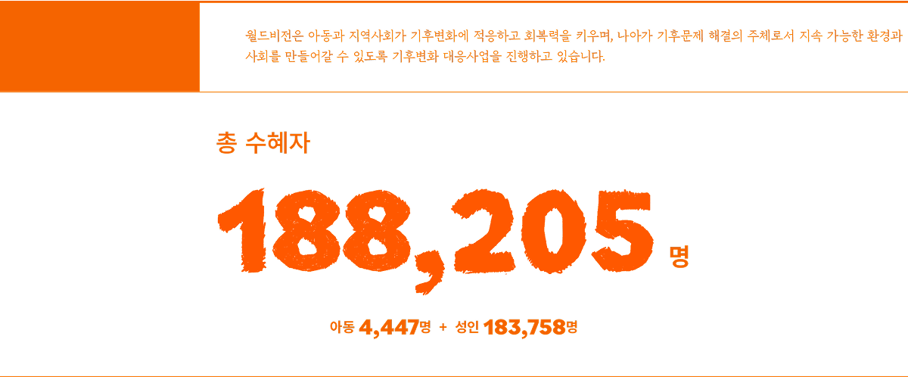
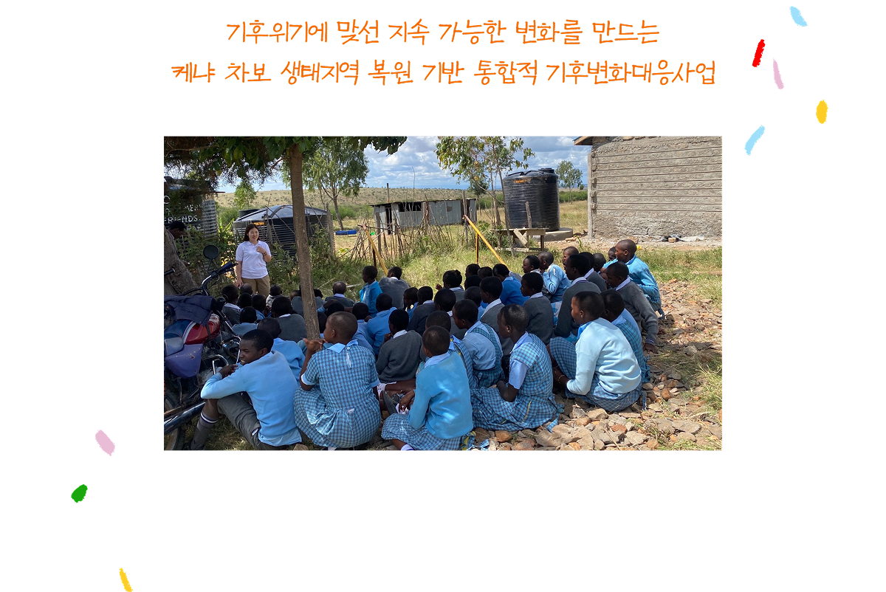
월드비전은 한국국제협력단(KOICA)과 함께 2023년부터 2027년까지 케냐 차보 생태지역에서
기후변화대응사업을 추진하고 있습니다. 이 사업은 기후변화에 취약한 카지아도주와 나록주를 중심으로 주민들과 함께 산림,
목초지, 농지를 복원하고, 기후 스마트 농업을 도입해 생태계와 주민의 삶을 동시에 회복하는 데 목표를 두고 있습니다.
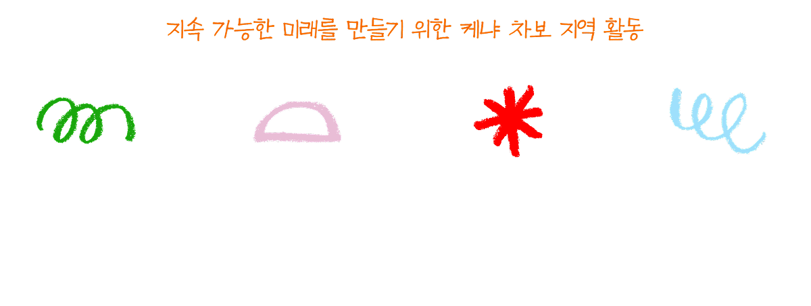
산림·목초지·농지 복원
주민 주도로 복원해 나갈 황폐지 총 5,000ha를 식별했습니다.
수자원 보호와 관리
9개 집수구역을 보호하고 수자원 사용자조합 역량 강화로 지역주민의 물 접근성을 개선했습니다.
기후 스마트 농업 및 혼농임업 기술 보급
50명 대표 농부 훈련 및 40개 시범 농장을 운영하고, 농업 생산성을 높이는 기후 스마트 농업 확산과 주민들의 소득 증대를
지원했습니다.
환경 교육과 주민 역량 강화
학교 환경클럽 10개를 운영하고, 20개 주민 옹호그룹을 구성하여 기후변화 대응정책 관련 역량 강화 및 인식을 증진했습니다.
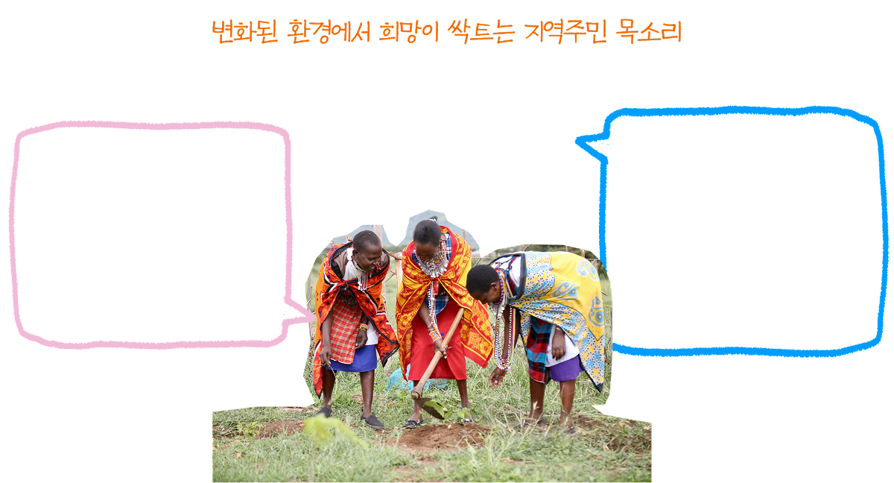
Grace Pingua (나록 지역 주민)
“작은 가지부터 잘라야 나무가 건강하게 자란다는 사실과 가지를 올바르게 자르는 방법을 배웠어요. 무분별한 벌목이 가뭄을 악화시킨다는
것도요. 제가 배운 내용을 여성들에게 전파해 나무를 지키는 법을 알리겠어요.”
Mary Ranka (카지아도 지역 주민)
“나무는 단순히 그늘을 제공하는 게 아니었어요. 과일도 얻을 수 있고, 가축한테 먹이도 되고, 공기를 깨끗하게 만들어요. 더 많은 나무를
심으면 비도 더 많이 올 거예요. 우리가 배운 대로 계속 나무를 심으면 우리 마을이 더 살기 좋은 곳이 될 거라고 믿어요.”
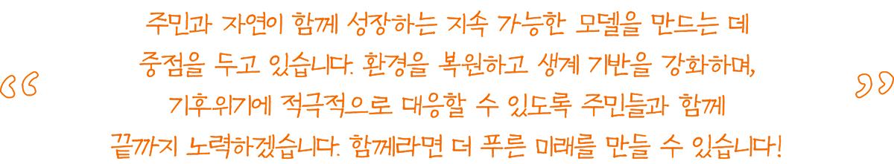
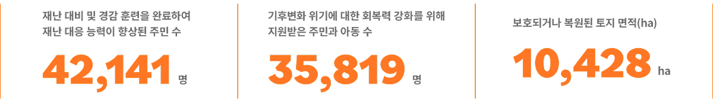
북한사업
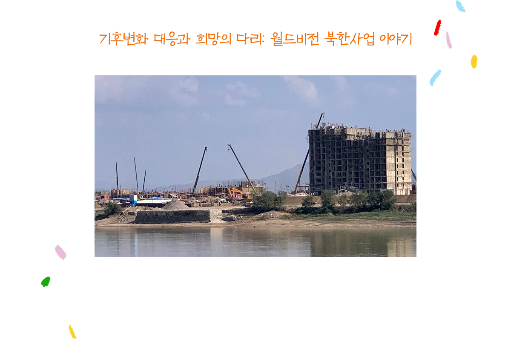
국제사회가 코로나19 팬데믹 종식을 선언했지만, 북한은 여전히 국경을 폐쇄하고 대외 협력을 제한하고 있습니다.
이로 인해 북한의 식량 안보 위기는 더욱 심화되었고, 특히 어린이와 취약계층이 큰 어려움을 겪고 있습니다.
이러한 상황에서도 지속적인 지원 방안을 모색하며 북한 주민들에게 희망을 전하기 위한 노력을 멈추지 않고 있습니다.
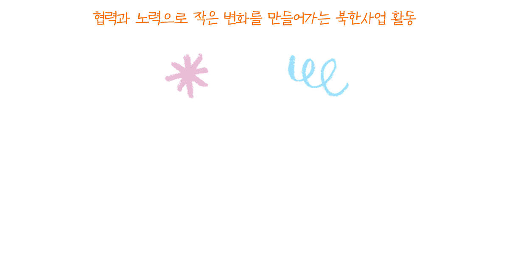
압록강 지역 홍수 대응
2024년 7월, 압록강 지역 집중호우로 약 15,400명의 이재민이 발생했습니다.
이에 월드비전은 2년 만에 통일부의 승인을 받아 중국 단동으로 출장을 다녀왔습니다. 현장 관찰 결과,
북한의 자주적인 복구 노력이 확인되었지만 외부 지원의 한계가 여전히 뚜렷했습니다. 이 출장은 북한 주민
지원을 위한 실질적인 방안을 모색하는 중요한 계기가 되었습니다.
북한 문제에 대한 공감 확산
지난해 11월에는 북한에 관심 있는 후원자들과 함께 독서 토론회 ‘오렌지 농장’을 개최했습니다.
참석자들은 북한 주민들의 생활상과 월드비전의 역할에 대해 깊이 논의하며, 의미 있는 협력 방안을 모색했습니다.